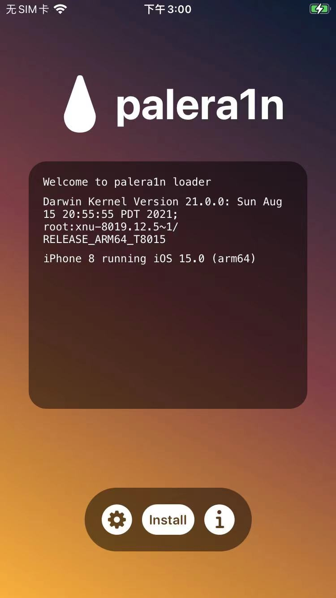
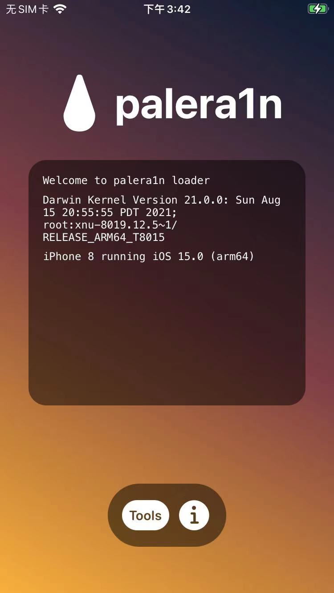
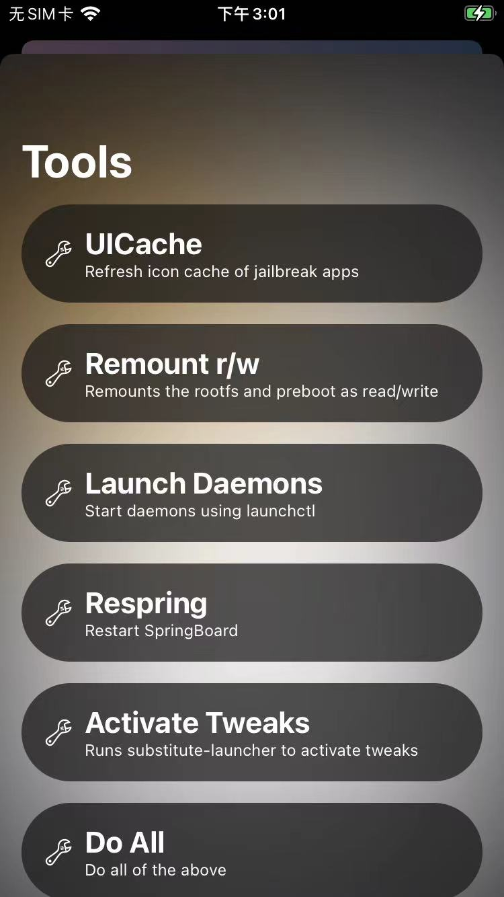
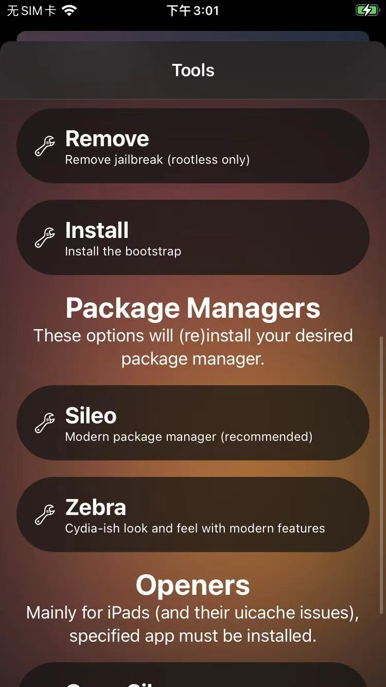
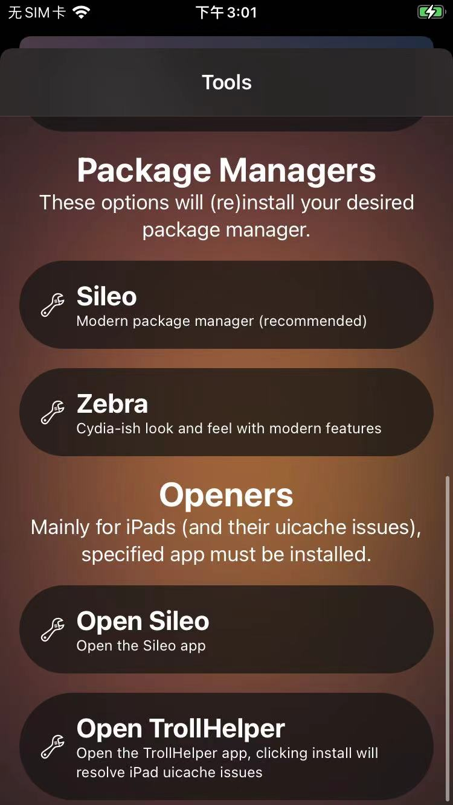
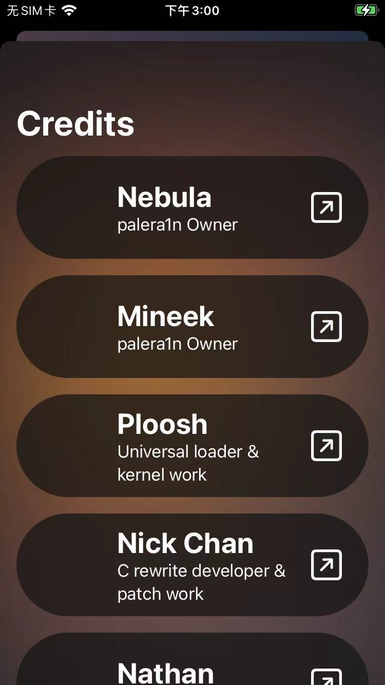
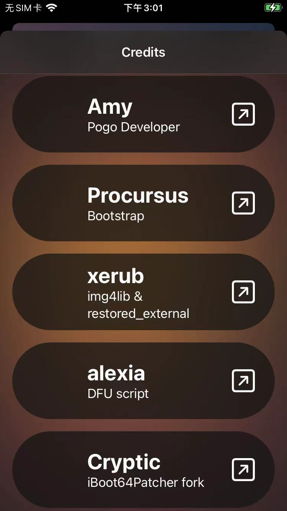

palera1n loader app
- palera1n的app = palera1n loader = palera1n loader app
打开palera1n的app后：
首页
- 如果中间出现Install按钮：说明越狱过程还没结束
- 
- 如果中间没有了Install按钮：说明已经越狱成功
- 
去看看palera1n的app的其他信息：
Tools
点击左边的齿轮图标=设置=工具=Tools，会打开Tools页面：



Credits
点击右边的i=info，会打开Credits页面：

